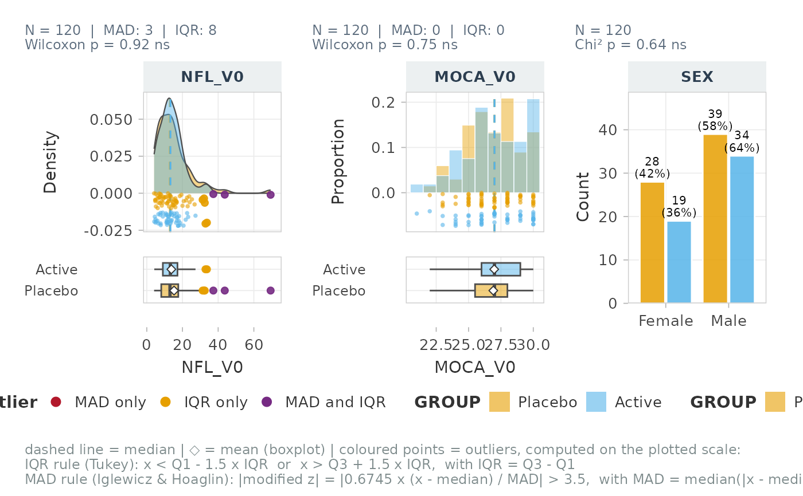
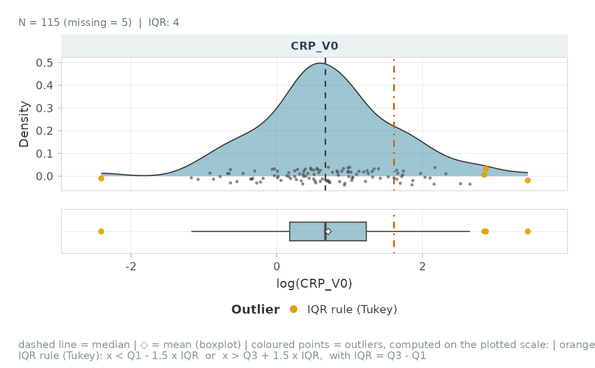

One panel per variable, its type chosen from the data:
continuous: density, jittered points (rug) and an aligned horizontal boxplot;
discrete (integer scores such as MoCA or UPDRS): histogram with bin width 1 (a smoothed density would invent values);
categorical or binary: bar chart with N and %.
Usage
plot_distribution(
data,
vars = NULL,
group = NULL,
metadata = NULL,
id_col = NULL,
labels = NULL,
type = "auto",
discrete_max = 15,
transform = NULL,
outlier_mad = FALSE,
outlier_iqr = TRUE,
mad_z_threshold = 3.5,
iqr_k = 1.5,
show_points = TRUE,
show_box = TRUE,
show_stats = c("median"),
ref_lines = NULL,
ref_label = "reference line",
test = c("auto", "nonparametric", "parametric", "none"),
palette = NULL,
fill_color = "#3B8EA5",
value_label = NULL,
ncol = 3,
base_size = 11,
rug_height_pct = 0.08,
heights = c(3, 1),
title = NULL,
subtitle = NULL,
seed = 1
)Arguments
- data
A data frame, tibble or matrix.
- vars
Variables to plot (names or tidyselect; default: all but the identifier and the group).
- group
Optional grouping column, in
dataor inmetadata.- metadata
Optional data frame holding
group, joined onid_col.- id_col
Identifier column (default: row names, or row numbers). Required with
metadata.- labels
Optional named vector of labels.
- type
"auto","density","histogram"or"bar", or a named vectorvariable -> type.- discrete_max
Integer variables with at most this many distinct values (or a range below three times this value) are drawn as histograms.
- transform
NULL,"log","log10","log1p","sqrt"or a function, applied for display only.- outlier_mad, outlier_iqr
Flag outliers with the MAD rule and / or Tukey's rule.
- mad_z_threshold
Cut-off of the modified z-score.
- iqr_k
Multiplier of the Tukey fences.
- show_points
Show the jittered points under the density.
- show_box
Add the horizontal boxplot under each panel.
- show_stats
Subset of
c("median", "mean"): vertical lines.- ref_lines
Numeric (every variable) or named list
variable -> values.- ref_label
Legend text of the reference lines (caption).
- test
"auto"/"nonparametric","parametric"or"none".- palette
Colours of the groups (see
pal_levels()).- fill_color
Fill colour without groups.
- value_label
X-axis title (default: label of the variable).
- ncol
Number of columns of panels.
- base_size
Base font size.
- rug_height_pct
Height of the jittered points, as a share of the density peak.
- heights
Relative heights of the density and boxplot panels.
- title, subtitle
Titles of the whole figure.
- seed
Seed of the jitter.
Value
A patchwork with the attributes "outliers" (one row per flagged
value) and "tests" (one row per variable with p_adj_BH), or NULL
when nothing can be plotted.
Details
Options: groups (from data or joined from metadata), on-the-fly
display transformation, outliers flagged by the MAD and / or IQR rules
(see outlier_flag_mad(), computed on the plotted scale, coloured by the
rule that flags them, formulas printed in the caption), a group test in
each subtitle (Wilcoxon / Kruskal-Wallis, Welch t / ANOVA, Fisher /
chi-squared) and reference lines per variable (LOD, clinical cut-off...).
Examples
p <- plot_distribution(cohort_sim, c(NFL_V0, MOCA_V0, SEX), group = GROUP,
outlier_mad = TRUE)
p

attr(p, "tests")
#> # A tibble: 3 × 4
#> Variable Test p p_adj_BH
#> <chr> <chr> <dbl> <dbl>
#> 1 NFL_V0 Wilcoxon 0.924 0.924
#> 2 MOCA_V0 Wilcoxon 0.747 0.924
#> 3 SEX Chi² 0.636 0.924
plot_distribution(cohort_sim, CRP_V0, transform = "log", ref_lines = list(CRP_V0 = log(5)))
